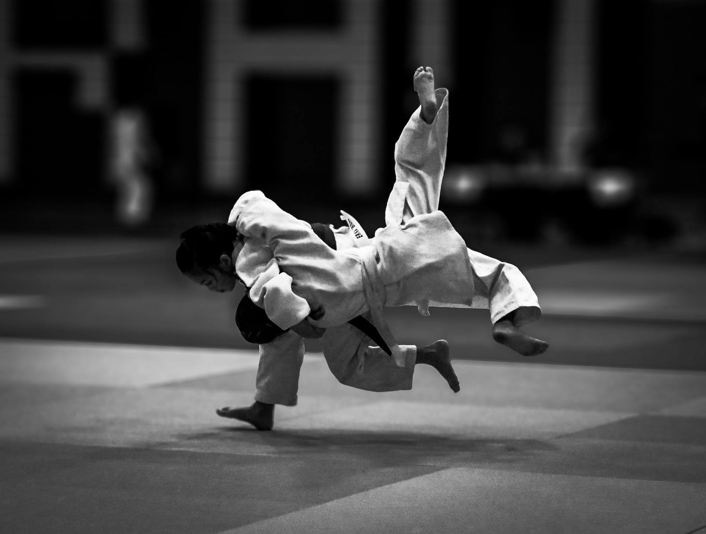

🥋
Fighting Self-Doubt
Valuing Function Over Form
A Guide to Building Confidence from the Inside Out through Judo

A Guide to Building Confidence from the Inside Out through Judo
The Gentle Way to Strength
Judo, translated as "the gentle way," is a modern martial art, combat sport, and philosophy founded in Japan in 1882 by Jigoro Kano. It is a physical, mental, and moral teaching system that emphasizes the use of technique and leverage to overcome a stronger opponent.
The core of judo is not about brute force, but about using an opponent's own strength and momentum against them. This principle, known as Seiryoku-Zenyo (maximum efficiency, minimum effort), teaches that true power comes from skill, timing, and understanding, not just physical size.
Mental and spiritual development. Building character, discipline, resilience, and a calm, focused mind. The courage to face challenges and humility to learn.
Physical application of judo principles. Mastering throws, holds, and movements with precision and efficiency, using the body as a tool.
Physical conditioning including strength, flexibility, and endurance. A healthy and capable body as the vessel for heart and technique.
Judo was created by Jigoro Kano (1860-1938), a Japanese educator who was often bullied due to his small stature. He began studying jujutsu to build strength but envisioned a safer, more educational system.
In 1882, Kano established the Kodokan Judo Institute in Tokyo. He became the first Asian member of the International Olympic Committee in 1909, and judo was introduced as an Olympic sport at the 1964 Tokyo Games.
"Judo is the way of the highest or most efficient use of both physical and mental energy." - Jigoro Kano
Unrealistic Standards & Their Impact
Social media platforms have become a digital mirror that often shows a distorted reflection of reality. Filters, editing, and carefully curated posts create unrealistic beauty standards that are impossible to achieve.
of girls say toxic beauty advice on social media causes low self-esteem
of girls follow at least one account that makes them feel less beautiful
of teens report social media content causes them to worry about their image
more likely to experience suicidal thoughts when preoccupied with appearance
While seemingly positive, often promotes extreme exercise and restrictive diets, leading to guilt and obsessive behaviors.
Dangerous trend that glorifies extreme thinness and can trigger eating disorders.
Social media normalizes expensive and risky procedures, making natural bodies seem inadequate.
Industry Impact: The global beauty industry, valued at over $500 billion, often profits from these insecurities, creating a cycle of comparison and dissatisfaction.
Function Over Form
Judo offers a powerful antidote to the appearance-focused culture of social media. It shifts the focus from what your body looks like to what your body can do. This is the core message of Function Over Form.
A systematic review published in the journal Sports found that judo training significantly improves self-confidence, body image, and perceived health-related quality of life.
The study of 1,392 participants highlighted that judo enhances exercise enjoyment, competence perception, and intrinsic motivation.
One of the first skills in judo is ukemi, the art of falling safely. This practice embodies the Japanese proverb "Nana korobi ya oki" – fall down seven times, stand up eight.
By learning to fall without injury, students develop resilience and courage to take risks. This teaches that setbacks are not failures, but opportunities to learn and grow.
One-Arm Shoulder Throw
A dynamic throw using opponent's forward momentum. Classic example of Seiryoku-Zenyo in action.
Hip Throw
Uses hips as fulcrum to lift and throw. Demonstrates leverage and close-body control principles.
More Than a Sport
Judo is more than just a sport or self-defense. It is a journey of self-discovery. Through disciplined training, you will learn about your own strengths, weaknesses, and the incredible potential of your body and mind.
The knowledge that you can defend yourself and handle physical challenges with skill and composure.
The ability to stay calm under pressure and persevere through difficulty with determination.
The capacity to manage fear, frustration, and anxiety in healthy, constructive ways.
Understanding that comes from practicing with partners of all shapes, sizes, and skill levels.
The Hidden Impact of Adult Messaging
Adults often say things to children that they believe are helpful, motivating, or harmless. However, research shows that many well-intentioned comments about appearance, weight, or body shape can have lasting negative impacts on a child's self-esteem and body image.
Many harmful comments come from adults who believe they are showing concern for health, motivating positive changes, or being supportive. However, these comments often focus on appearance rather than health behaviors, create shame rather than motivation, and establish external validation as the primary source of worth.
parents say their child is self-conscious about appearance
"You need to lose weight to be faster"
"You'd be better if you were smaller"
"Watch what you eat during season"
"The uniform doesn't fit right"
Comparing athletes' bodies to each other
Comments about clothing fit or size
Unsolicited advice about eating habits
Comparisons to other children's bodies
Comments about physical development
Remarks about "looking healthy" or "unhealthy"
Decreased self-esteem, increased body dissatisfaction, development of food anxiety, and shame about natural body changes.
Internalized critical voice, disordered eating patterns, body dysmorphia, difficulty trusting body cues, and intergenerational transmission of body image issues.
✓ "Your body is strong and capable"
✓ "I love watching you play/perform"
✓ "You worked so hard in practice today"
✓ "Your determination is inspiring"
✓ "How did that make you feel?"
✓ "I'm proud of your effort"
Before commenting on a child's body or appearance, ask yourself: "Will this help them appreciate what their body can do, or will it make them worry about how their body looks?"
www.usjudo.org
www.ijf.org
www.dove.com/self-esteem-project
1. Palumbo, F. et al. (2023). Risks and Benefits of Judo Training for Middle-Aged and Older People: A Systematic Review. Sports (Basel).
2. Dove Self-Esteem and Social Media Report (2022).
3. Ballard Brief, Brigham Young University (2024).
From Parents
"You look like you've gained weight"
"Maybe you shouldn't eat that"
"You'd be so pretty if you lost weight"
"Are you sure you want seconds?"
"Summer's coming, time to get in shape"